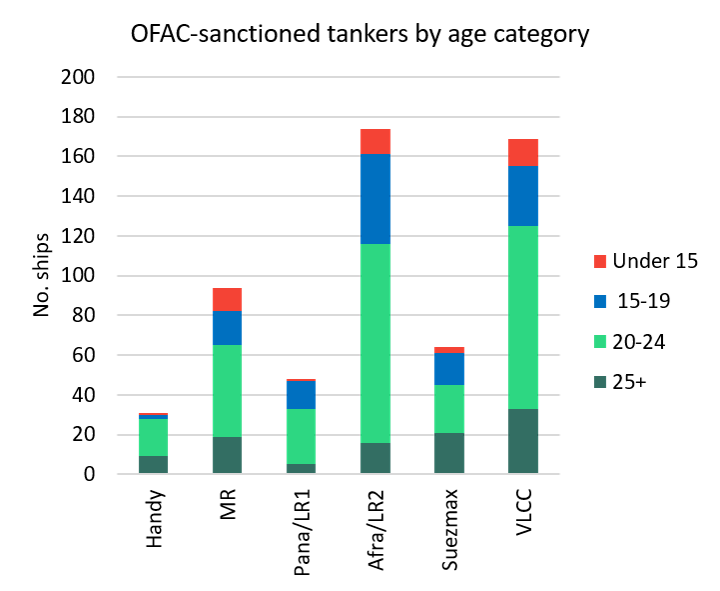
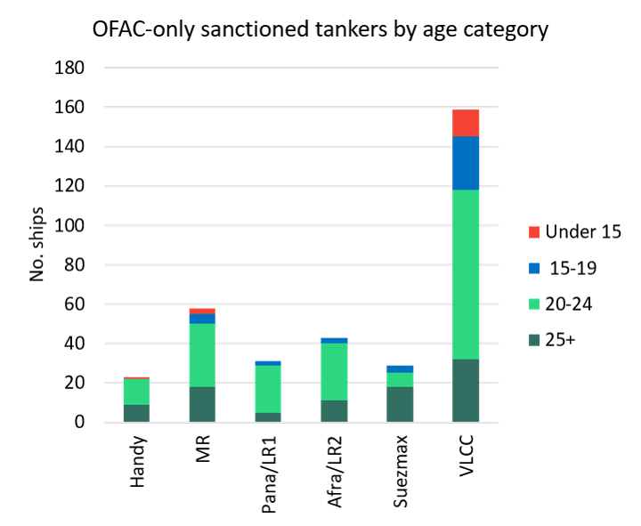

As of the day before yesterday, US Energy Secretary Chris Wright is understood to be considering removing sanctions on all tankers in an effort to cut soaring freight costs and reduce energy inflation in the run up to the US midterm elections. Wright stressed that these ships would be used to carry ‘legal’ oil only – presumably meaning no Iranian or Russian oil subject to sanctions. The US hopes these tankers can be used to get more oil out of the Mideast Gulf. If this does become policy, some countries will doubtless take advantage of the additional tonnage. Its impact on rates, however, will depend on how long this amnesty lasts beyond the US midterm elections.
Key VLCC routes fell heavily yesterday morning in the FFA market. TD34 November contract fell from W680 to W595; December was down from W650 to W570. Even the Calenders were sold off. Cal 2027 was down from $51/t to $46/t and 2028 dropped from $20/t to $17/t.
If flows through Hormuz remain obstructed, as they have been in the past two weeks, additional vessels released from OFAC sanctions will put downward pressure on rates in the region. Only 61 VLCCs have exited the Middle East Gulf in the past two weeks, down from 78 in the two weeks prior, according to Vortexa. If flows increase, putting additional pressure on scarce STS equipment and crew, rates would remain very strong.
For the past three weeks the Mideast region has been relatively short of tonnage, our brokers tell us. High lifting volume has combined with weather delays to vessels returning to the region. Position lists are slightly fuller today but are still tight.
How many more VLCCs would be immediately available?
Almost 170 VLCCs are currently sanctioned by OFAC. Of these, 33 are over 25 years old and are probably unusable either by Middle Eastern NOCs or Asian importers. A further 92 OFAC sanctioned VLCCs are between 20 and 24 years old. These might be used for shuttle runs but are unlikely in all but the most extreme freight environments to be used by importers. This leaves 44 sanctioned VLCCs that are under 20 years old and could well be acceptable to charterers in non-OECD Asia. The NITC fleet of 38 VLCCs and 7 Suezmaxes is unlikely to be offered out for non-Iranian bbls. This reduces the under 20-year-old OFAC sanctioned, non-Iranian fleet to 22 VLCCs. Three of these are designated by Europe, so effectively the available VLCC fleet could grow by 19 units.
What of the smaller sizes?
OFAC has also sanctioned 64 Suezmaxes; 174 Aframax/LR2s; 48 Panamax/LR1s; 94 MRs and 31 Handies. Lifting sanctions on these vessels will have little meaningful impact on vessel availability in the Middle East as most are actively engaged in Russian oil trades. Many are therefore also concurrently sanctioned by Europe, which puts them out of reach to G7 importers. This is particularly true of the Aframax/LR2 OFAC-sanctioned fleet.

